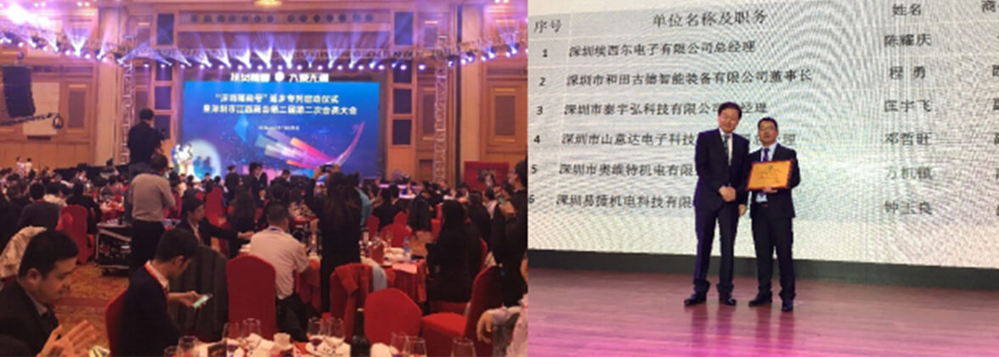

公益之路

深圳市埃西尔电子有限公司成立于2003年公司位于有“设计之都”、科技之城”美誉的深圳是中国自动化设备、SMT设备、AI设备、配件最大服务商之一，为客户提供先进的设备安装，培训生产支援深圳市埃西尔电子有限公司成立于2003年公司位于有“设计之都”、科技之城”美誉的深圳是中国自动化设备、SMT设备、AI设备、配件最大服务商之一，为客户提供先进的设备安装培训，生产支援
据了解，深圳市江西商会虽然只成立了短短的5年，但在各方面都取得了优异的成绩。会员企业中已有28家上市公司，展现了赣商精神和风貌，“人在特区，心系老区”。商会会员企业从投资到帮扶，累计在江西实际投资达630多亿元。深圳市江西商会不仅凝聚了江西在深圳的企业家，也用爱心凝聚了在深圳的150多万创业、务工和求学乡亲。